Jan. 2025 — Present
Purdue Solar Racing
Vehicle Dynamics Engineer - designing and building a solar vehicle to compete in the American Solar Challenge and Formula Sun Grand Prix
Suspension
Redesigned the front suspension from a double wishbone to a pushrod architecture, carrying the design through modeling, analysis, machining, and physical testing.
Suspension Architecture
Reconfigured the front suspension architecture from a double wishbone configuration to a pushrod system, improving packaging and load paths into the carbon fiber monocoque.
- Modeled suspension geometry to optimize camber and toe change
- Optimized suspension load path into the carbon fiber monocoque
- Simulated turning, bump, and braking load cases using FEA to validate structural integrity
- Designed suspension components in Siemens NX from the optimized geometry
- Fabricated front suspension hardware to meet performance requirements
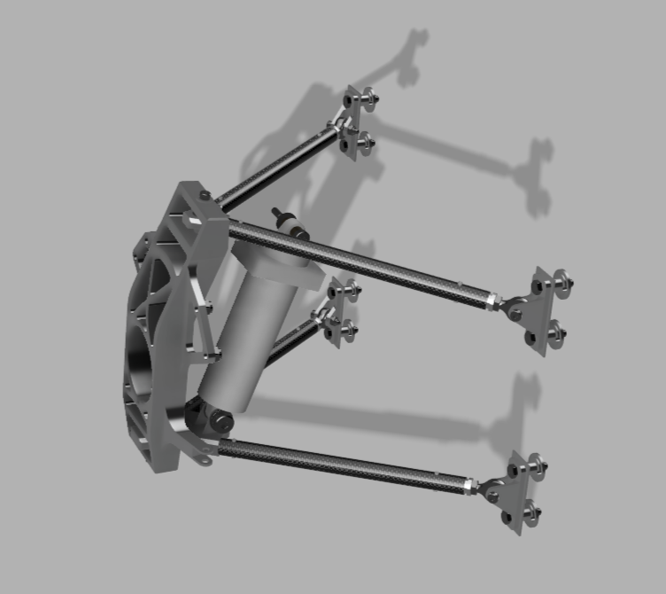
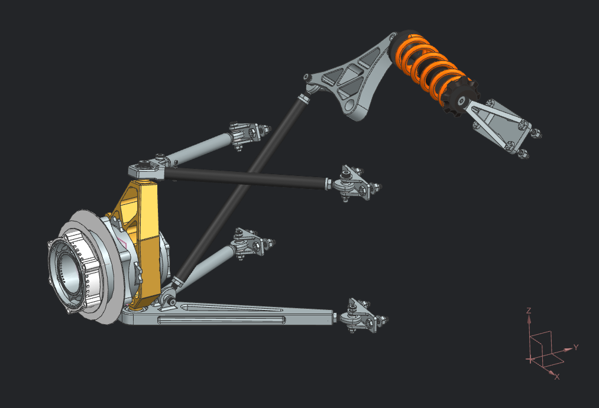
Suspension Modeling
Used Lotus Shark to evaluate kinematic behavior and guide suspension design decisions, including how camber changes through bump travel.
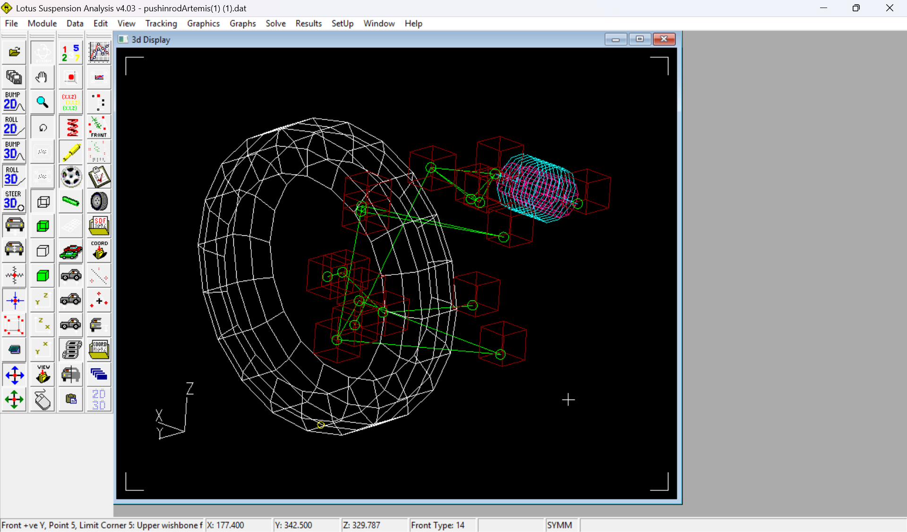
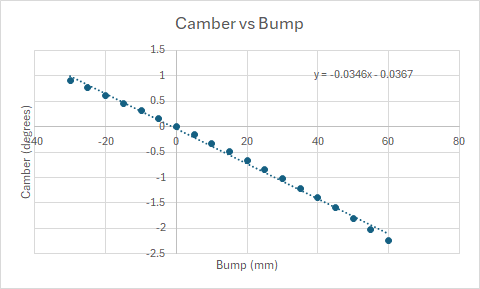
FEA
Designed the front suspension in Siemens NX from the optimized geometry, then simulated turning, bump, and braking loads with FEA to inform iterative design decisions.
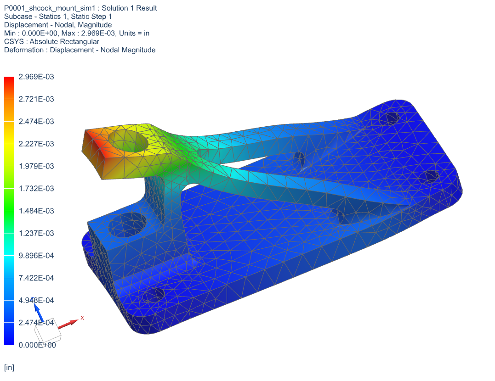
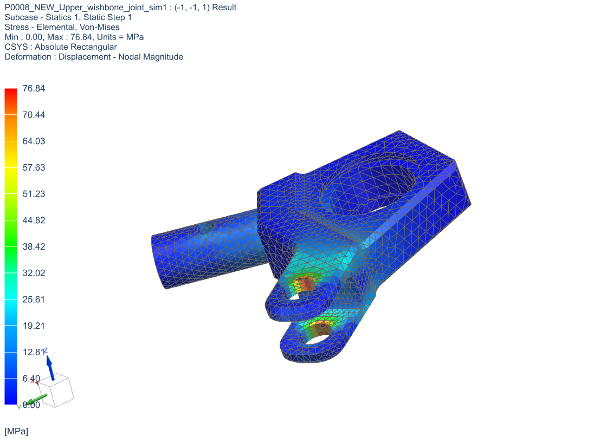
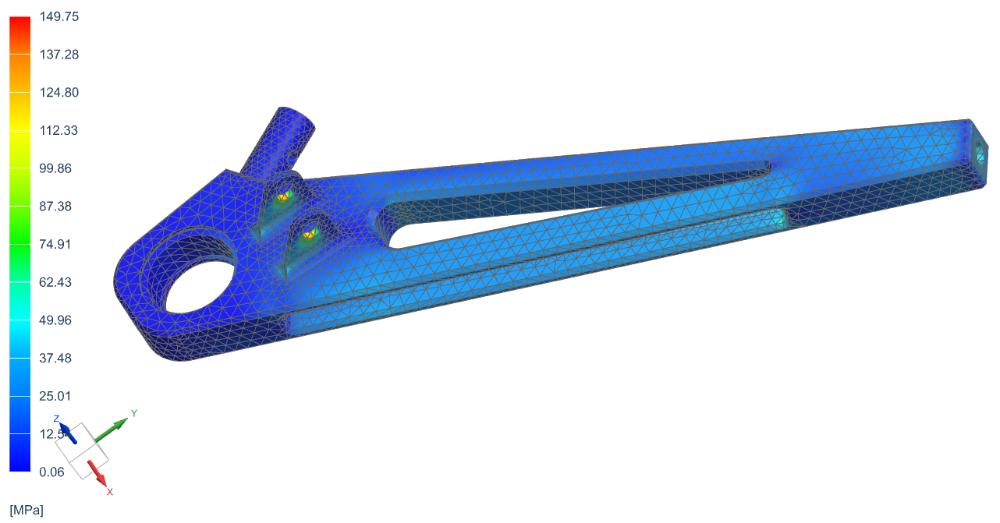
CNC Machining
Machined front suspension hardware from Al-7075 with Haas 3-axis and 5-axis CNC mills.
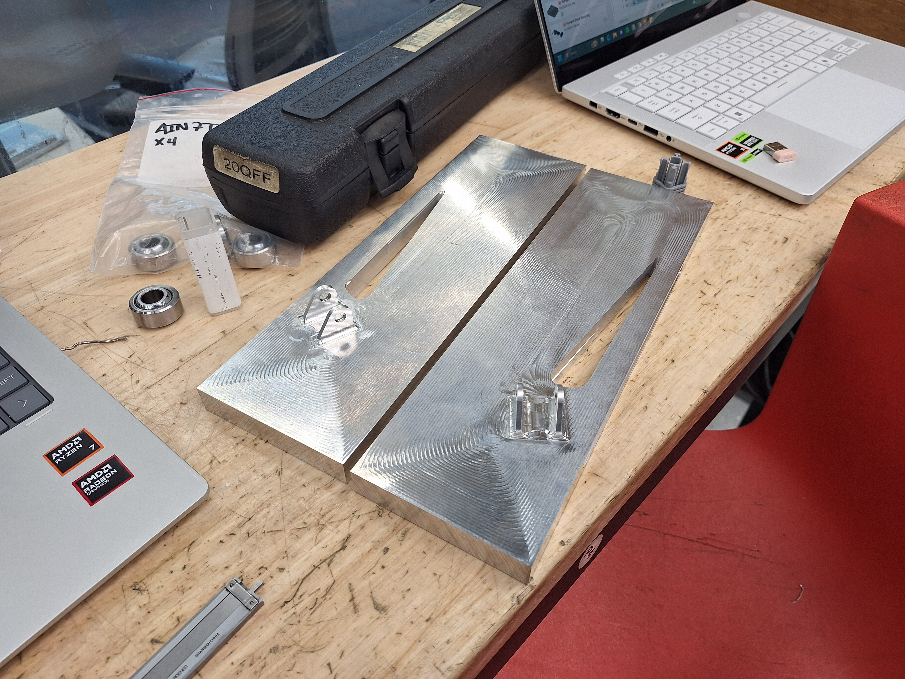
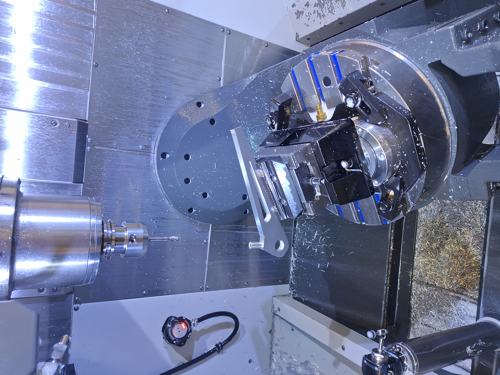
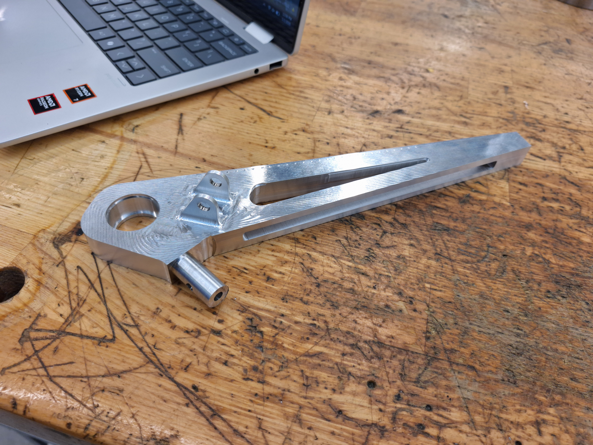
Roll Cage
Led the design and structural analysis of an ASC 2026 regulation-compliant roll cage.
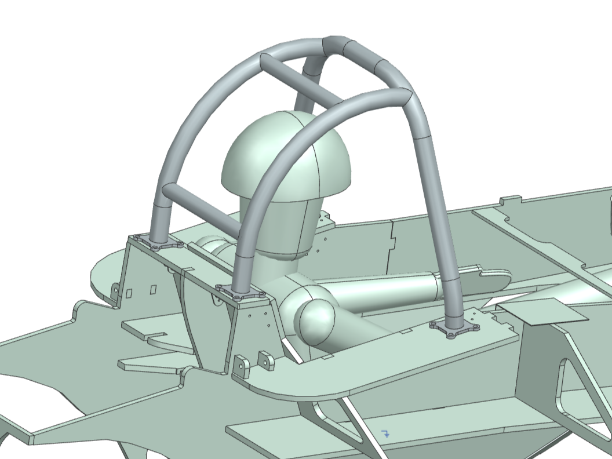
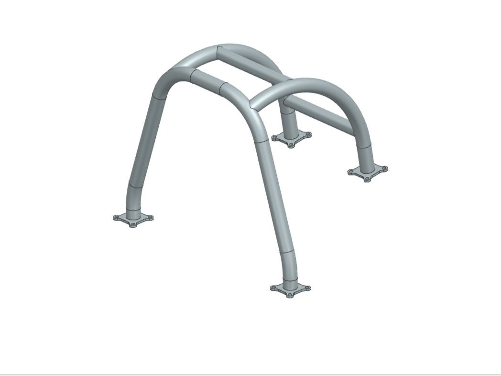
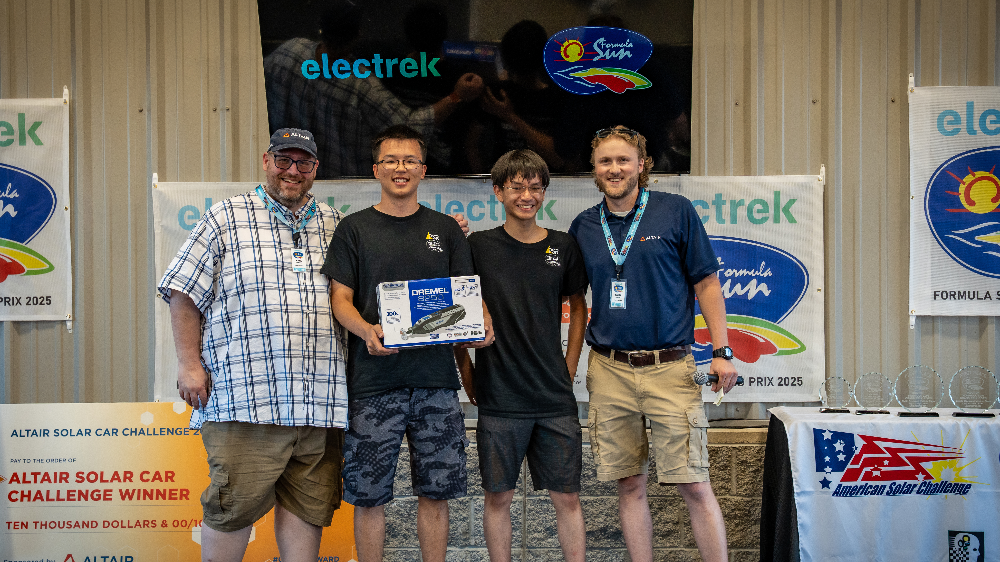